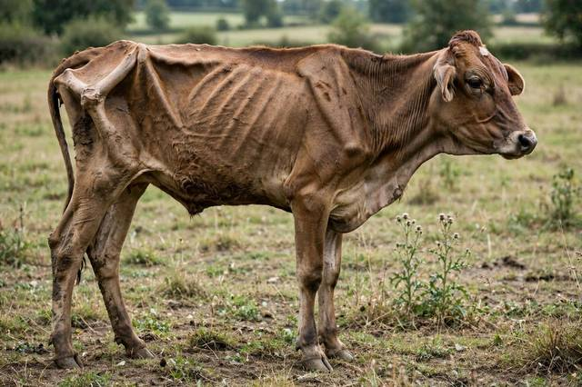
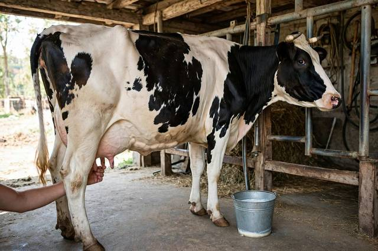
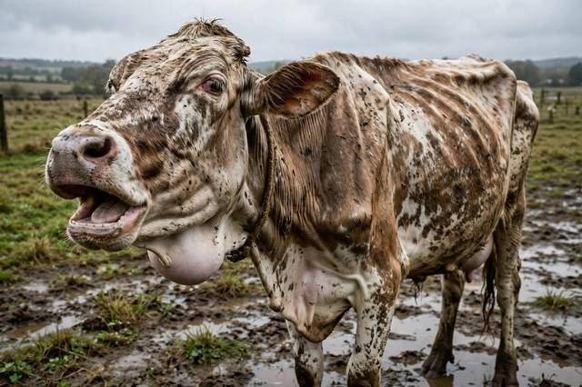

Liver fluke disease is caused by parasitic trematodes, commonly Fasciola species. It can cause acute liver damage or chronic production losses, depending on parasite burden and stage.
This guide covers clinical signs, causes, diagnosis, treatment principles and prevention.
Clinical Signs
1
Poor body condition(Thin and in poor condition)
2
Reduced growth(Grows more slowly than normal)
3
Reduced milk yield(Milk drops)
4
Anaemia(Pale gums and eyelids)
5
Bottle jaw(Soft swelling under the jaw)
6
Weakness(Dull and lacking strength)
7
Sudden illness(Sudden severe illness in acute cases)
8
Abdominal pain(Pain in the belly)

Poor body conditionReduced growth

Reduced milk yieldAnaemia

Bottle jawWeaknessSudden illnessAbdominal pain
Causes and Transmission
Infection is acquired by ingesting infective stages on wet pasture or vegetation. Snails act as intermediate hosts, so risk is linked to suitable wet habitats and grazing patterns.
Pathogenesis
Cattle ingest fluke cysts (metacercariae) on wet pasture. Young flukes burrow through the gut wall and migrate through the liver, damaging liver tissue and causing bleeding. Adult flukes settle in the bile ducts, where they feed on blood and irritate the duct walls, which thicken and may calcify.
Chronic infection causes anaemia, low blood protein (leading to bottle jaw and fluid swelling), weight loss and reduced milk yield; heavy acute infections can cause sudden death from liver damage and internal bleeding.
Veterinary Diagnosis
Diagnosis may include faecal sedimentation, coproantigen tests, blood tests or post-mortem examination. Test choice depends on parasite stage because eggs may not be detectable early after infection.
Differential Diagnosis
Several conditions can look similar. A veterinarian distinguishes them by the signs, history and laboratory findings:
Gastrointestinal worms — cause weight loss, diarrhoea and anaemia, mainly in grazing young stock.
Theileriosis — causes fever, anaemia and enlarged lymph nodes.
Johne's disease — causes chronic diarrhoea and wasting in adult cattle.
Malnutrition or copper deficiency — cause poor condition without the anaemia and bottle jaw pattern of fluke infection.
Treatment and Case Management
Use a veterinarian-selected flukicide appropriate to the parasite stage and local resistance situation. Correct timing matters; not all products act against immature and adult flukes. Observe withdrawal periods and avoid repeated blanket treatment without monitoring.
When to seek urgent help: Severe weakness, pale mucous membranes, bottle jaw or sudden deaths in a grazing group need urgent investigation.
Recommended Medicines
1
Anthelmintic – Triclabendazole(Kills immature and adult liver flukes)12 mg/kg PO
2
Anthelmintic – Albendazole(Kills adult liver flukes — dose depends on product and fluke stage)As prescribed by a veterinarian
3
Supportive care – Multivitamins(Supports recovery in weak, anaemic animals)10 ml IM daily
⚠ Important Tips:
Time fluke treatment correctly — not all products kill young flukes.
Dose flukicides accurately by body weight.
Use flukicides only under veterinary advice and follow withdrawal periods.
Avoid repeated blanket treatment without monitoring.
Oral medicine / drench — dose as the vet advisesInjection — vet-administered only
Prevention and Herd Management
Map wet grazing areas, manage access to high-risk habitats, use strategic testing and treatment, quarantine incoming stock and review local fluke forecasts with veterinary services.
Frequently Asked Questions
What are the symptoms of liver fluke in cattle?
Poor body condition, reduced growth and milk yield, anaemia, bottle jaw and weakness in chronic disease. Acute disease may cause sudden illness and abdominal pain.
What causes liver fluke in cattle?
Liver fluke disease is caused by parasitic trematodes, commonly Fasciola species. Infection is acquired by ingesting infective stages on wet pasture or vegetation, and snails act as intermediate hosts.
How is liver fluke in cattle diagnosed?
Diagnosis may include faecal sedimentation, coproantigen tests, blood tests or post-mortem examination. Test choice depends on the parasite stage, because eggs may not be detectable early after infection.
How is liver fluke in cattle treated?
Use a veterinarian-selected flukicide appropriate to the parasite stage and local resistance situation. Correct timing matters, as not all products act against immature and adult flukes. Observe withdrawal periods.
How can liver fluke in cattle be prevented?
Map wet grazing areas, manage access to high-risk habitats, use strategic testing and treatment, quarantine incoming stock and review local fluke forecasts with veterinary services.
How to treat liver fluke in cattle?
Use a veterinarian-selected flukicide appropriate to the parasite stage and local resistance situation. Correct timing matters, as not all products act against immature and adult flukes, so always consult a veterinarian.
What causes bottle jaw in cattle?
Bottle jaw, a swelling under the jaw, can be a sign of liver fluke in chronic disease, along with poor condition, anaemia and reduced milk yield. Severe weakness or bottle jaw in a grazing group needs urgent investigation.
گائے میں جگر کے کیڑوں کا علاج کیا ہے؟
جگر کے کیڑوں کا علاج ویٹرنری ڈاکٹر کی تجویز کردہ دوا سے کیا جاتا ہے، اور دوا کا وقت بہت اہم ہوتا ہے کیونکہ ہر دوا ہر مرحلے کے کیڑے پر اثر نہیں کرتی۔ گیلی چراگاہوں سے بچاؤ اور باقاعدہ ٹیسٹ ضروری ہیں۔
Key Takeaway
Early recognition, accurate diagnosis, responsible veterinary care and herd-level prevention are central to managing this condition. Follow current local veterinary authority guidance and medicine labels.
Radostits, O.M., Gay, C.C., Hinchcliff, K.W., Constable, P.D. Veterinary Medicine: A Textbook of the Diseases of Cattle, Horses, Sheep, Pigs and Goats.
FAO animal health manuals. Food and Agriculture Organization of the United Nations.
اردو خلاصہ — کسانوں کے لیے آسان الفاظ میں
یہ بیماری کیا ہے؟
جگر کا کیڑا ایک طفیلی ہے جو گیلی اور دلدلی چراگاہوں سے لگتا ہے۔ یہ آہستہ آہستہ جگر کو نقصان پہنچاتا اور جانور کو کمزور کرتا ہے۔
اہم علامات
جسمانی حالت خراب ہونا
بڑھوتری اور دودھ کم ہونا
خون کی کمی
جبڑے کے نیچے سوجن
کمزوری
فوری علاج اور احتیاط
ڈاکٹر کی منتخب فلوک مار دوا (ٹرائیکلابینڈازول) درست وقت پر دیں، ہر دوا ہر مرحلے پر اثر نہیں کرتی
گیلی اور دلدلی جگہوں پر چرائی محدود کریں
کمزور جانور کو اچھی خوراک اور ڈاکٹر کے مشورے سے طاقت کی دوا دیں
نئے جانور کو الگ رکھ کر جانچیں
درست تشخیص اور خوراک کے لیے اپنے ویٹرنری ڈاکٹر سے رابطہ کریں۔
✍️ Written by Dr. Shahid Bilal Depal, DVM (PVMC RVMP #15068)
This guide is for educational purposes. Consult a registered veterinarian for diagnosis and treatment.